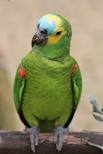
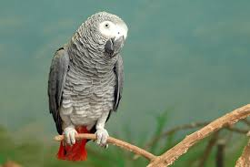
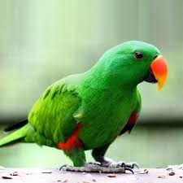
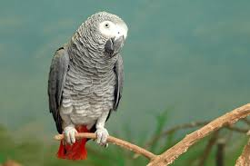
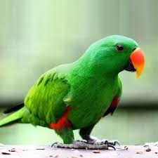

Nome Cientifico:Amazona
Papagaio-verdadeiro
O papagaio-verdadeiro é uma ave psittaciforme da família Psittacidae.
Conhecido também como ajuruetê, juru-etê, curau, papagaio-comum, papagaio-curau,
papagaio-de-fronte-azul, papagaio-grego, papagaio-baiano, trombeteiro (Mato Grosso),
-boiadeiro e louro, como aliás são chamados todos os papagaios domesticados em nosso País.Características
Mede entre 35 e 37 centímetros de comprimento e pesa cerca de 400 gramas.
Se distingue pela cabeça amarela, com azul-esverdeado na fronte e bochecha, narinas escuras, ombros vermelhos delineados com amarelo, asa com parte vermelha e extremos azul-escuro.
Resto do corpo geralmente verde, mais claro entre o ventre e o rabo. Sua voz é bem típica:
“krik-kiakrik-krik-krik”, “kréo”. A cor da íris dos adultos é amarelo-laranja no macho ou vermelho-laranja na fêmea, onde se destaca um fino anel externo vermelho, os imaturos têm íris marrom uniforme.
O bico é negro no macho adulto.Alimentação
Alimenta-se de sementes e frutos.Reprodução
Costuma reproduzir em buracos de rochas erodidas, barrancos ou ocos de árvores.
Os filhotes permanecem no ninho por cerca de 2 meses. O período de reprodução é de setembro a março.
Demora 5 anos pra chegar a idade adulta.
Curiosidades
Devido ao “dom da fala”, o papagaio-verdadeiro é muito procurado pelos homens, para servir de ave de estimação.
Centenas deles são capturados e comercializados clandestinamente em feiras e mercados.
Distribuição Geográfica
Interior da América do Sul, do nordeste do Brasil, leste da Bolívia, Paraguai, até o norte de Argentina. Presente no interior do Brasil, no Nordeste (Piauí, Pernambuco e Bahia), Centro-oeste, Sudeste (São Paulo, Minas Gerais e Rio de Janeiro) e no Sul, Santa Catarina (inclusive litoral) e Rio Grande do Sul.
Hábitos
Habita florestas úmidas, savanas, floresta de galeria, áreas cultivadas com árvores e matas com palmeiras, até 1.600 m. Comum em casais ou bandos.
Macho e fêmea voam tão juntos um do outro que o casal parece ser uma grande e fabulosa ave de quatro asas, o que se observa inclusive quando estão em bando. A melhor defesa que possui é ficar imóvel e calado. É freqüentemente “canhoto”, razão pela qual o pé esquerdo é melhor desenvolvido. Boceja ocasionalmente. Para dormir reúne-se em bandos.
Estão cada vez mais sendo encontrados em áreas urbanas como de São Paulo e Rio de Janeiro.
Bando de papagaio-verdadeiro.

 

mengo


mengo